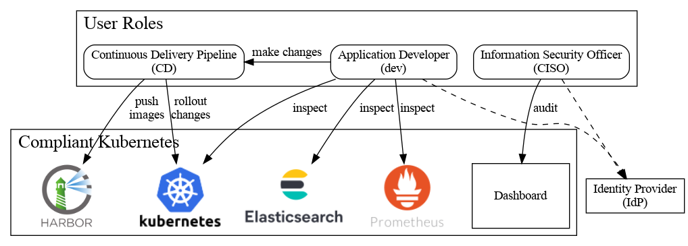

CISO Guide Overview
This guide is for the Chief Information Security Officer (CISO) who needs to prove to an internal or external auditor that the application runs on top of a compliant platform.
The CISO can be described via the following user stories:
- As an information security officer, I want to audit the Compliant Kubernetes cluster, so as to comply with continuous compliance policies.
- As an information security officer, I want to quickly identify compliance violation and covert them into actionable tasks for developers.

The CISO only needs:
- a modern browser (recent versions of Chrome, Firefox or Edge will do);
- the URL to the Compliant Kubernetes dashboard (usually https://grafana.example.com);
- credentials for the Compliant Kubernetes cluster.
If in doubt, contact the Compliant Kubernetes operator.